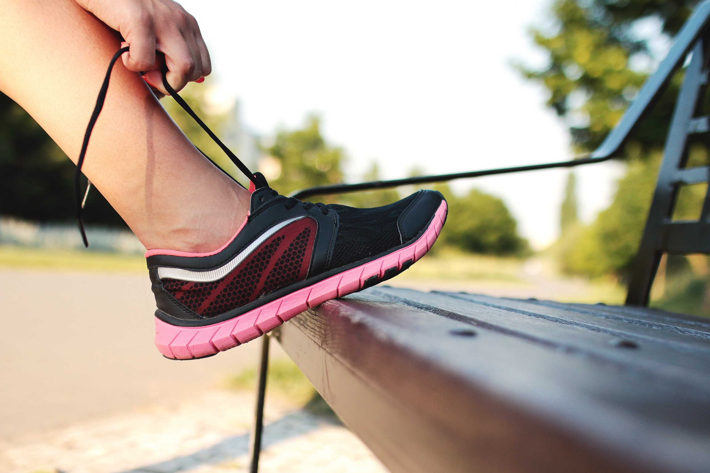

Boost Your Productivity with These 10 Minute Workouts
By: Ella
Introduction
Are you feeling bogged down by a never-ending to-do list and struggling to find the energy to complete it all? Look no further than these quick and effective 10-minute workouts to boost your productivity!
Previous Subheadings:
- Why Working Out Can Improve Your Productivity
- The Science Behind 10-Minute Workouts
Research has shown that exercise not only improves physical health, but also has a positive impact on cognitive function and productivity. By engaging in short bursts of physical activity throughout the day, you can increase your energy levels, alleviate stress, and improve focus.
But why only 10 minutes? It turns out that the duration of a workout may not be as important as the intensity. Shorter, high-intensity workouts have been shown to provide the same benefits as longer, moderate-intensity workouts. In fact, fitting in a quick 10-minute workout during a break may be more effective than a longer session that leaves you feeling exhausted and unmotivated.
So what types of workouts should you be doing? We've compiled a list of 10-minute workouts that require little to no equipment and can be done anywhere. From bodyweight exercises to cardio intervals, these routines are designed to get your heart pumping and your muscles working.
Whether you're looking to start your day off on the right foot or need a mid-afternoon pick-me-up, these 10-minute workouts will help you power through your day with renewed focus and energy. So what are you waiting for? Let's get moving!
ad space
Why Work Out?
When it comes to improving our work productivity, there are endless strategies that we can adopt to enhance our performance. Incorporating a workout routine into our daily routine is a proven technique that can help us boost our productivity, focus, and energy levels.
But why does working out actually help improve our productivity? Research shows that physical exercise can help reduce stress, improve brain function, and increase overall well-being. A mere 10 minutes of exercise can provide an immediate boost in energy levels, which can help us tackle our workload with renewed vigor.
Not only does exercise improve our physical health, but it can also positively impact our mental health. Exercise releases endorphins, which are chemicals that help us feel more positive and energetic. This can lead to improved focus, better decision-making abilities, and an overall increase in our sense of well-being.
Furthermore, implementing a regular workout routine can help us establish a sense of routine and structure in our day-to-day lives. This can lead to improved time management skills, which can ultimately enhance our productivity levels.
By taking just 10 minutes out of our day to exercise, we can significantly improve our overall work productivity and mental and physical well-being. So why not give it a try? Incorporating even a small amount of physical activity into your daily routine can have a big impact on your productivity and overall quality of life.
ad space
10 Minute Workouts You Can Do Anywhere
In our fast-paced world, it can be challenging to find time to exercise. However, physical activity is crucial for our overall health and well-being. That's why we've created a list of ten-minute workouts that you can do anywhere, from your office to your living room.
Our workouts are designed to boost your productivity and energy levels, so you can be at your best throughout the day. Research has shown that even short bursts of exercise can increase blood flow to the brain, improving cognitive function and mental clarity. Additionally, regular exercise can help you sleep better and reduce stress, making it easier to handle the challenges that come with a busy schedule.
Whether you're looking to squeeze in a quick workout during your lunch break or want to incorporate some movement into your daily routine, our ten-minute workouts are a great place to start. From high-intensity interval training to stretching and yoga, we've got something for everyone.
Our workouts require no equipment and can be modified to suit your fitness level, making them accessible and convenient for anyone. Plus, they're easy to remember, so you can do them whenever you have a spare moment.
Don't let your busy schedule get in the way of your health and wellness. Try our ten-minute workouts today and see the difference it can make in your productivity and overall well-being.
ad space
Maximizing Your Workout
Looking to squeeze your workout into your busy schedule? Look no further than these 10-minute workouts that will maximize your productivity both in and out of the gym.
Not everyone has the luxury of spending hours at the gym each day, but that doesn’t mean your fitness goals have to fall by the wayside. These 10-minute workouts are designed to give you maximum results in minimal time, so you can get back to your busy day feeling energized and refreshed.
From quick HIIT circuits to targeted weight training, these workouts are designed to fit seamlessly into your daily routine. Whether you have access to a full gym or just a few simple pieces of equipment, there’s a workout here to suit your needs.
But it’s not just your physical health that will benefit from these 10-minute workouts. Research shows that regular exercise can have positive effects on your mental health as well, improving your focus, concentration, and overall well-being.
So what are you waiting for? Start incorporating these 10-minute workouts into your daily routine and see the benefits for yourself. Whether you’re looking to improve your fitness, increase your energy levels, or simply carve out some time for yourself each day, these workouts are the perfect way to maximize your productivity both in and out of the gym.
ad space
Stretching and Recovery
When it comes to productivity, physical activity plays a crucial role. Contrary to popular belief, sitting at a desk for long hours doesn't equate to being productive. Taking breaks to stretch and exercise can increase focus, energy levels, and overall health. This is where 10-minute workouts come in handy.
In our article about boosting productivity with 10-minute workouts, we've already introduced you to the benefits of short yet effective exercises. From cardio to strength, we've covered various types of workouts that can be done in 10 minutes or less. In this subheading, we'll delve into the importance of stretching and recovery.
Stretching is often overlooked or undervalued, but it has numerous benefits for your body and mind. It helps reduce muscle tension, improve range of motion, and prevent injuries. It can also reduce stress and increase mindfulness, which can help you be more productive in the long run. Our 10-minute stretching routine is designed to help you release tension and recharge your body.
Recovery is equally important, especially if you want to avoid burnout and injury. It includes activities such as foam rolling, massage, and gentle movement. Our recovery routine aims to help you relax, improve circulation, and reduce soreness. By taking care of your body, you'll be able to work more efficiently and with less pain and stress.
Whether you're at home or in the office, taking 10 minutes to stretch and recover can make a big difference in your productivity and well-being. So, let's get started with our 10-minute stretching and recovery routine and see the results for yourself!
ad space
Conclusion
In today's fast-paced world, time is of the essence, and we often find ourselves struggling to manage our workload efficiently. However, research has shown that dedicating just ten minutes a day to exercise can improve productivity and boost energy levels throughout the day.
Throughout this website, we have provided you with various workout routines that are easy to follow and can be done within the comfort of your home or office. Whether you prefer yoga to release tension, HIIT to burn calories, or bodyweight exercises to tone muscles, we've got you covered.
By incorporating these short workout routines into your daily routine, you can improve your overall well-being and become more efficient in your work. These exercises not only help increase physical strength but also improve mental clarity and focus, resulting in better performance at work.
Don't let a busy schedule keep you from prioritizing your health and well-being. By investing just ten minutes a day in your body, you will see significant changes in your productivity and energy levels.
In conclusion, we urge you to try out our ten-minute workouts and see how they can impact your work and everyday life. Remember, a healthy body is a healthy mind, and by taking care of yourself, you are taking the first step towards achieving success in all areas of life. So, what are you waiting for? Start moving and see the results for yourself!
ad space